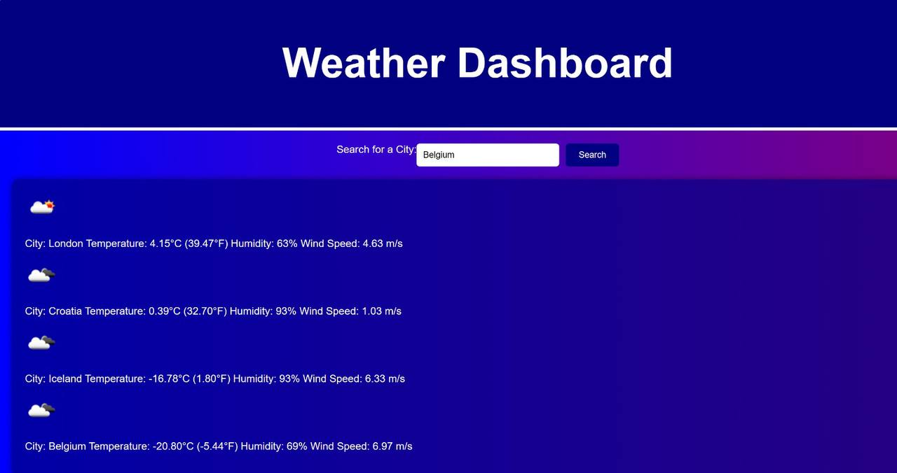

Portfolio
Weather-Dashboard
This is a weather dashboard app that runs in the browser and features dynamically updated HTML and CSS. It retrieves weather data for cities using the 5 Day Weather Forecast API. Features Users can search for a city and see current and future weather conditions for that city. The searched city is added to the search history. Users can click on a city in the search history to see its current and future weather conditions again. Current weather conditions include: City name Date Icon representation of weather conditions Temperature Humidity Wind speed Future weather conditions include a 5-day forecast that displays: Date Icon representation of weather conditions Temperature Humidity
Project Title 2
Recipe Finder is a web application that allows users to search for recipes based on ingredients. It fetches data from TheMealDB API and displays the recipes in a card layout. Each card contains an image of the meal, the name of the meal, and a button to view more details about the recipe. Features Search Recipes: Users can search for recipes by entering an ingredient in the search field. The application fetches and displays all meals that include the entered ingredient. View Recipe Details: When a user clicks on the "View Recipe" button on a meal card, the application fetches and displays more details about the recipe. This includes the meal image, meal name, cooking instructions, and details about the country of origin. Country Details: The application fetches and displays details about the country of origin for each meal. This includes the country's population, region, and subregion. Default Recipes: When the page loads, the application displays a set of default recipes.
API Used TheMealDB API: Used to fetch the recipes and meal details. REST Countries API: Used to fetch the details about the country of origin for each meal. User Story As a user, I want to be able to search for recipes based on ingredients so that I can find meals that I can make with the ingredients I have on hand. As a user, I want to be able to view more details about a recipe, such as the cooking instructions and country of origin, so that I can decide if I want to make the meal. As a user, I want to be able to see details about the country of origin for each meal, such as the population and region, so that I can learn more about the culture and cuisine. As a user, I want to be able to see a set of default recipes when the page loads so that I can get inspiration for meals to make. As a user, I want the application to fetch data from TheMealDB API and REST Countries API so that I can have access to a wide variety of recipes and country information. Installation To install the app, simply clone the repository to your local machine and open the index.html file in your web browser. Alternatively, you can view the deployed application on GitHub Pages at [https://felix-annaman.github.io/RF-Project/].